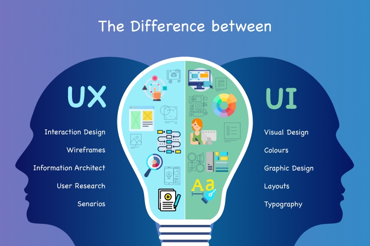

What is meant by user interface design?
User interface (UI) design is the process designers use to build interfaces in software
or computerized devices, focusing on looks or style.
Designers aim to create interfaces which users find easy to use and pleasurable.
UI design refers to graphical user interfaces and other forms
How do you design a user interface?
What is the UI design process? 7 steps
Step 1: User research. ...
Step 2: Define objectives. ...
Step 3: Wireframing. ...
Step 4: Visual design. ...
Step 5: Prototyping. ...
Step 6: Testing and iteration. ...
Step 7: Development handoff
